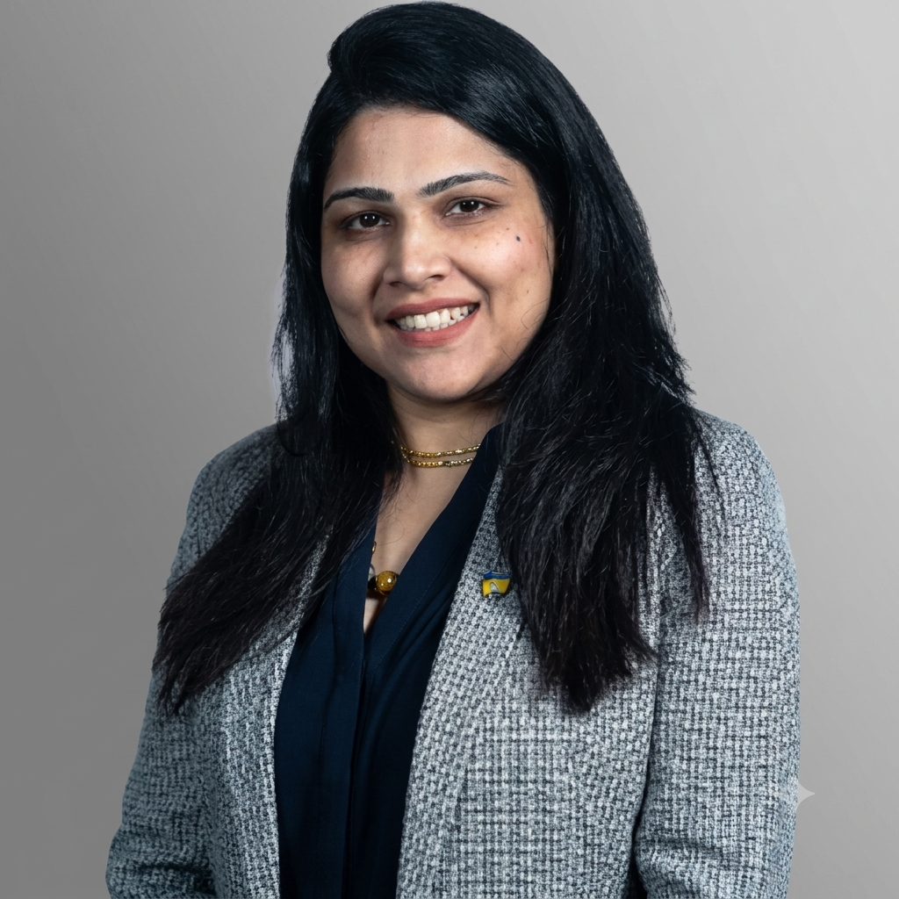
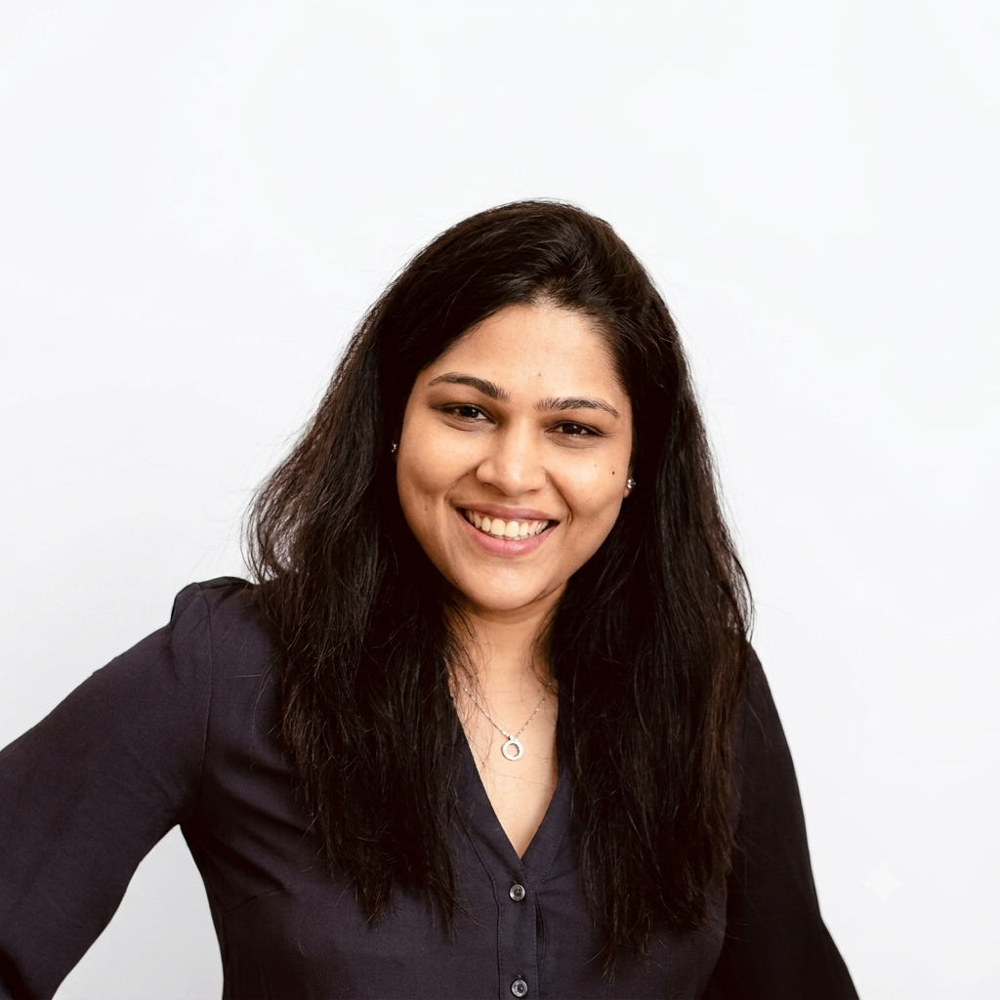
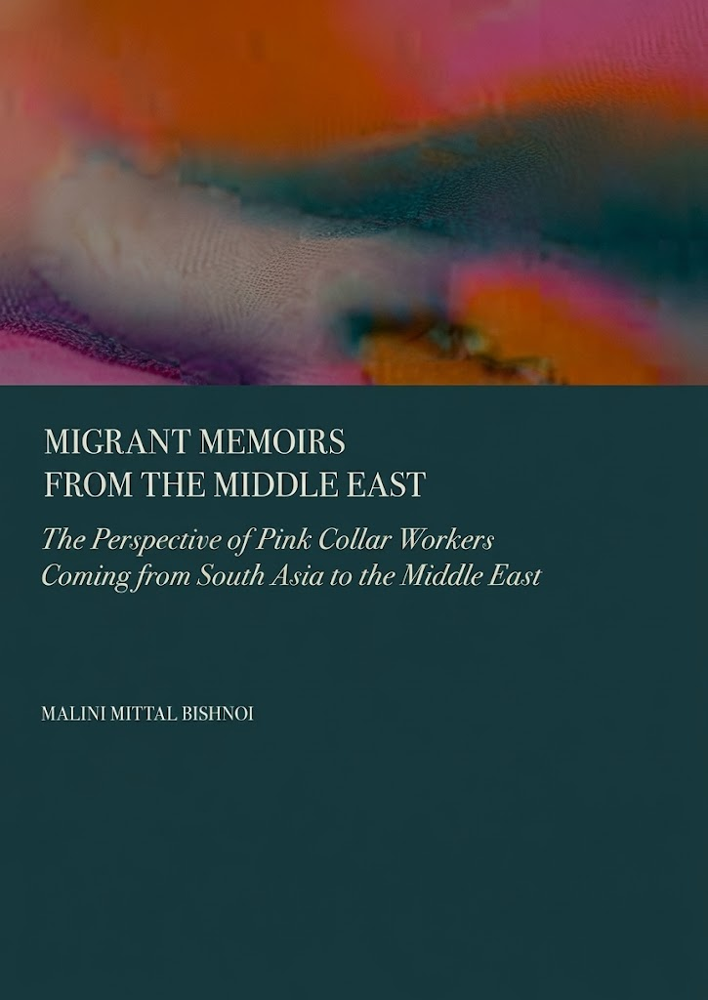

Migrant Memoirs from the Middle East
A field-driven account of pink-collar labor and migration in Kuwait, told through the lived experience of its workers.
Sociologist · Educator
Storyteller of the Gulf’s evolving human landscape.


My work sits at the intersection of curriculum design, research strategy and pedagogical innovation — shaped by two decades spent moving between grassroots development work and the academy.
Beyond the CredentialsThe Gulf is more than skyscrapers. It is a story of people, migration, identity, memory and transformation.
 Dubai
Dubai
 People
People
 Architecture
Architecture
 Traditional Culture
Traditional Culture
 Modern Gulf
Modern Gulf
 Communities
Communities
 Everyday Life
Everyday Life
Every skyline has a story beneath it — of hands that built it and hearts that call it home.
I write about the migrant worker and the majlis, the mall and the mosque, the grandmother's memory and the teenager's Instagram feed — all part of the same unfolding society.
This is not a region frozen between "traditional" and "modern." It is alive, plural, and constantly reinventing what belonging means.

A field-driven account of pink-collar labor and migration in Kuwait, told through the lived experience of its workers.
Migrant Memoirs from the Middle East distills years of fieldwork among Kuwait’s pink-collar workforce into a compelling, human account of migration and labor in the Gulf — giving voice to the people so often left out of the region’s growth story.
View on AmazonTwo decades of scholarship on migration, technology and the future of learning.
A field-driven account of pink-collar labor and migration in Kuwait, told through the lived experience of its workers.
Examines how digitally native Gen Z is reshaping power dynamics within romantic relationships.
A look at teaching pedagogies built to close the gap between classroom and career.
Bishnoi, M. Malini & Gaur, Bhawna (2021). Case Reference No. 221-0054-1. Published by Amity Research Center.
Bishnoi, M. Malini (2020).
Teaching is where research becomes a conversation. My students are trained to see their own cities as fields of study — and to carry that curiosity long after they leave the classroom.
Sociology of the Gulf, Migration Studies, and Urban Society — undergraduate and graduate seminars.
Fieldwork before theory: students learn to observe their own societies before they learn to analyse them.
Regular research-methods workshops for early-career scholars across the region.
Supervising graduate research on migration, identity and social change in the Gulf.
Building public-facing programmes that bring sociological thinking outside the classroom.
Completed a Ph.D. in Sociology at the Delhi School of Economics, University of Delhi, building the foundation for two decades of work on migration, education and social change.
Served as Project Officer, monitoring projects across Indian states and coordinating with government ministries, consultancies and NGOs — work that fed directly into the Human Development Report.
Took part in a professional exchange with WRED Canada, broadening her perspective on grassroots development work.
Built a teaching career across the American University of Kuwait and the Gulf University of Science and Technology, becoming a versatile voice across the Social, Behavioral and Allied Sciences.
Publishes a field-driven account of pink-collar labor and migration in Kuwait — the latest chapter in a career spent moving between the academy and the development sector.
Let’s Connect
For speaking invitations, research collaborations, media enquiries or just to say hello — send a note and I’ll get back to you.